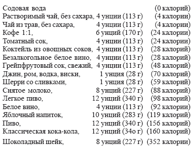

Контроль за весом

С каждым днем становится все больше свидетельств связи между потреблением жиров и содержанием жира в организме. При обследовании 155 мужчин, которые вели сидячий образ жизни и в пище которых жиры составляли 41 % (на 11 % больше рекомендуемой нормы), было установлено, что доля жира в теле составляла у них от 18,6 % до 40,3 %. (Нормальное содержание жира для мужчин составляет 15 %.)
Доля жира и общая масса тела, как выяснили исследователи, не зависели от количества калорий в пище. Вместо этого оказалось, что это связано с нездоровым соотношением жиров и углеводов в рационе пациентов.
Уменьшение количества жиров в пище помогает избавить организм от запасов жира, к такому выводу пришли исследователи. Заменяйте жир сложными углеводами, такими как овощи, фрукты и цельные крупы.
Ешьте нежирное и будьте не жирными.
Растительное масло вместо животного. Даже тип жира, который вы едите, по-видимому может оказать влияние на ваш вес. Твердые жиры (такие как масло) сильнее способствуют набору веса, чем жидкие растительные масла (например, оливковое), – сообщают авторы одной работы, опубликованной в американском журнале клинического питания. Несомненно, это радует. Оливковое масло, как вы уже читали, связано со здоровьем. Поэтому берите оливковое масло, когда это требуется вашей кулинарии.
Ешьте нежирное, но больше. Ученые из отдела наук о питании Корнеллского университета на 24 женщинах провели испытания диет с низким, средним и высоким содержанием жиров. Они обнаружили, что испытуемые, соблюдавшие диету с низким содержанием жиров, без каких-либо специальных усилий потребляли на 627 калорий в день меньше, несмотря на то, что им разрешалось есть столько, сколько они хотели. За две недели это позволяло уменьшить свой вес на 1 фунт.
«Большинство диет ограничивает количество потребляемой пищи. Лишний вес пациенты сбрасывают, но затем набирают его снова. Диета с пониженным содержанием жиров такова, что ее можно придерживаться всю жизнь, поддерживая нормальный вес», – так объясняет этот эффект д-р Давид Левицкий из Корнелла. Добавим, к слову, что, по нению пациенток, блюда с пониженным содержанием жиров оказались превосходными на вкус.
Питание с пониженным содержанием жиров означает уменьшение потребления мясных и молочных продуктов и увеличение доли фруктов, овощей и круп.
Закуска без вреда. То, что вы создавали в течение многих дней, может разрушить одна поездка на пикник. Тому, кто считает калории, могут помочь легкие закуски, которые внесут в диету достаточное количество питательных веществ (но мало жира и калорий). Вот десять закусок, которые вы можете есть, не боясь, что они на многие недели повиснут на ваших бедрах.
Попкорн без масла, 1 горсть (6 калорий)
Виноград без косточек, 10 ягод (34 калории)
Дыня касаба, 1 ломтик (38 калорий)
Черешня сырая, 10 ягод (47 калорий)
Гладкий персик, 1 шт. (88 калорий)
Ананас сырой, 2 ломтика (88 калорий)
Имбирная коврижка, 2 шт. (58 калорий)
Мандарин, 1 шт. (46 калорий)
Зеленый перец, 1 шт. (36 калорий)
Спаржа сырая, 4 стебля (12 калорий)
Такова жизнь.
Низкокалорийная диета входит в моду. По данным совета по контролю за калорийностью, ассоциации, собирающей сведения о производстве диетических продуктов, сейчас меньше американцев, чем когда-либо, соблюдают диету. В произвольно выбранный момент времени только один из четырех взрослых американцев находится на диете. Это на 26 % меньше, чем в 1986 году. Однако другая тенденция выглядит обнадеживающе: больше, чем когда-либо, американцев включает низкокалорийные продукты в свой повседневный рацион.
Лучшие крекеры – из цельной пшеницы. Вы любите похрустеть крекерами? Так любите, что не можете от этого отказаться? Этого и не требуется! Только выбирайте крекеры из цельной пшеницы, или немецкие и скандинавские крекеры. На унцию (28 г) калорийность у них иниальная – 90-100 калорий, в то время как у более мягких и тяжелых крекеров 140 и более. И в них совсем нет жиров.
Пейте, но не забывайте о калориях. Вы можете начать толстеть и не будете знать почему, если вы не будете учитывать калории, которые содержатся в ваших напитках. Например, известно ли вам, что стакан цельного молока содержит больше калорий, чем черная булка?
Да-да, именно так. 159 калорий против 97! Мы приводим таблицу калорийности некоторых популярных напитков, которая показывает, насколько сильно она может варьироваться. Это даст вам возможность контролировать получение калорий в течение дня.

Из этой таблицы можно видеть, что даже для высококалорийных напитков типа легкого пива можно найти место в вашем рационе – но только при одном условии: вы должны быть способны ограничиться одной или двумя кружками. Вспомните-ка, когда вы в последний раз посидели в баре и выпили полдюжины бутылочек грейпфрутового сока, который по калорийности равен пиву. Понятно, что выбор напитков для вашей диеты касается того, сколько вы пьете в такой же мере, как и что вы выбираете.
Полюбите овощи. Реклама: «Покупайте! Ешьте! Пейте!» Опрос 15010 покупателей, проведенный по заказу журнала» Эдвертайзинг Эйдж», показал, что реклама, которая чаще всего запоминалась людям, относилась к наиболее неприемлемым для правильного питания продуктам. Два из наиболее часто упоминаемых объяввлений относились к безалкогольным напиткам, три – к говядине и два – к наборам быстрых закусок.
Ешьте понемногу и часто. Доктор Питер Ваш из медицинского центра университета штата Калифорния в Лос-Анджелесе, предупреждает: «Избегайте принимать большие количества пищи сразу. Распределите меньшие приемы в течение всего дня. Это уменьшает гормональный сигнал, который заставляет жировые клетки делиться».
«Уменьшая количество пищи и увеличивая частоту приема пищи, принимаемой за раз, вы уменьшаете количество вырабатываемого инсулина, и это уменьшает стимуляцию образования новых жировых клеток в организме, – говорил он, – Меньшие и более частые приемы пищи, кроме того, уменьшают количество триглицеридов (кровяных жиров) и инсулина, выбрасываемых в кровь, поэтому меньшее количество их может быть преобразовано в жировые клетки. Ваш организм действительно усваивает пищу более эффективно и оставляет меньше инсулина и триглицеридов для сохранения и для образования новых жировых клеток».
Считать калории, конечно, необходимо. Но слишком строго к этому относиться не надо. Если воспользоваться методом д-ров Джун Рот и Харви М. Росс, авторов книги «Успешная и выполнимая диета», можно легко оценить количество калорий, которое вы получаете в день.
Они разделили наиболее распространенные продукты по калорийности на три группы.
200–400 калорий
Птица. Считайте 4 унции (113 г) птичьего мяса, приготовленного без кожиицы и без добавления жира, за 200 калорий.
Рыба. Счиитайте по 200 калорий за 4 унции (113 г) рыбы (кроме жареной), приготовленной без дополнительного масла.
Мясо. Почти все порции по 4 унции (113 г) попадают в эту категорию. Наиболее постные куски содержат по 250 калорий, наиболее жирные – 400 калорий
Пироги и торты. Считайте фруктовый пирог за 300 калорий, обычный за 200 и пирог, посыпанный сахарной пудрой, за 400 калорий.
Сыр, молоко, мороженое. Считайте, что в 1 унции (28 г) самых твердых сортов сыра 100 калорий. Одна чашка цельного молока – 160 калорий; снятого молока – 90 калорий. Полчашки обычного мороженого —150 калорий.
Злаки и продукты их переработки. Считайте все крупы по 100 калорий в 1 унции (28 г). Макароны – 210 калорий в порции весом в 5 унций (142 г) без соуса. Добавьте 30 калорий за обычный томатный соус, 150 – за мясной соус.
Сливки и йогурт. Считайте 1 столовую ложку любых сливок – сладких, взбитых или кислых – за 50 калорий. Обычный нежирный йогурт содержит 10 калорий в столовой ложке.
Яйца. Считайте одно яйцо за 80 калорий.
Фрукты. Бананы, груши и яблоки содержат по 100 калорий в одной штуке. Апельсины и грейпфруты – по 50 калорий. Ананас, персики и ломтики дыни, или полчашки ягод – 30 калорий.
Овощи. Порция большинства овощей – полчашки – содержит 20 калорий. Картофелины содержат по 90 калорий каждая.
Напитки. Кофе и чай – 0 (плюс 15 калорий за каждую чайную ложку сахара). Все 8—унциевые (227 г) порции прохладительных напитков 100 калорий, пиво – 125 калорий в 8 унциях (227 г), вино – 70 калорий в 1 унции (28 г).
Хлеб. Считайте один ломтик хлеба по 60 калорий каждый.
Жиры и масла. Считайте ввсе асла, маргарины и растительные масла по 100 калорий на столовую ложку без верха. То же самое относится к майонезу и заправке для салата.
Ограничьте свой аппетит. Прислушайтесь к себе. «Как правило, излишний вес – это только симптом болезни, а не сама болезнь, – говорит Барбара Якобсон, один из авторов книги «Вес, пол и семейная жизнь: хрупкое равновесие». За этим часто может скрываться психологическая проблема. Мы никогда не начинаем лечить ожирение с того, чтобы предписывать нашим пациентам меньше есть. Прежде всего мы стараемся помочь им, предложив другие способы удовлетворить их психологический голод». Еда, например, может быть единственным развлечением или, наоборот, оазисом спокойствия в слишком однообразной или полной стрессов жизни. Д-р Якобсон рекомендует вести дневник, который поможет вам разобраться в своих чувствах относительно полноты и похудения. Она убеждена, что без такого самопонимания все усилия по избавлению от избыточного веса обречены на неудачу.
Верьте в свои силы. Корень ваших бед в том, что даже когда вы нашли причину избыточного веса, где-нибудь в закоулках вашего мозга может по-прежнему таиться предательская мыслишка: «Я непривлекательна. Я никогда не смогу похудеть. Какая несправедливость: я полнею даже от сельдерея, а моя подруга ест пирожки и мороженое – и ничего!»
Избавиться от этих мыслей поможет небольшая тренировка. Для начала запишите те мысли, которые дают вам хорошее настроение. Д-р Джойс Нэш, автор книги «Раскройте свои способности», рекомендует периодически устраивать себе перерывы для того, чтобы разобраться со своими мыслями. Он советует: «Поместите метки-напоминания в в тех точках, которые в течение дня часто попадаются вам на глаза – на часах, на зеркале, на туалетном столике. Как только вы видите метку, остановитесь и спросите себя, о чем вы в этот момент думаете. Подумайте о том, что поддерживает вас и придает вам уверенность. Если вы находите у себя печальные мысли, гоните их прочь».
Кто отвечает за ваш вес? Только вы сами. У вас никогда не было желания обвинять других в том, что вы располнели. «Это мой супруг виноват – зачем он купил коробку конфет?» Думаете ли вы, когда ваша мама ставит на стол третье блюдо, что из-за нее вы в очередной раз не смогли похудеть?
Известно, что если вы будете считать себя жертвой, то вы непременно ей станете. Скажите своей маме и своему мужу, что вы на диете, и попросите их убрать эти соблазны подальше от вас. Если вы осознаете это, то, будем надеяться, сможете себя контролировать. Это нужно вам и только вам. Стараясь похудеть, не ставьте целью сделать приятное вашему мужу, родителям или друзьям. Только тогда, когда вы сами будете желать этого, вы добьетесь успеха.
Отстаивайте свое право быть стройными. Когда кто-нибудь предлагает вам пищу, которая вам не нужна, вы имеете полное право сказать: «Спасибо, не надо.» Учитесь отстаивать свои взгляды. Не бойтесь сказать нет и объяснить почему «нет!» Найдите себе друзей, которые поддержат вас и придут на помощь, если она вам понадобится.
Представьте самое худшее. Зрительные образы могут помочь вам победить неимоверный аппетит. Каждый раз, когда вы вспоминаете о любимой, но, увы, запрещенной вашей диетой пище, закройте глаза и представьте себе, что вожделенное блюдо кишит мерзкими жуками, покрыто плесенью или еще чем-нибудь столь же малоаппетитным. Концентрируясь на таких отталкивающих картинах вы сможете уменьшить чувство голода и отразить атаки на вашу силу воли.
Другой аналогичный способ – это представить, что вы поправились еще на 10 фунтов (4,54 кг). Затем прибавьте еще несколько фунтов.
Даже после этого вы по-прежнему хотите есть? А теперь представьте, что вы добились оптимального для вас веса.
Как избавиться от лишних килограммов? Ставьте перед собой реальные цели. Весьма вероятно, что, если вы будете стараться похудеть сразу намного, вас постигнет неудача. После этого вы потеряете веру в свои силы. Д-р Нэш советует ставить перед собой конкретные реальные цели. Вместо абстрактных задач типа «мне надо похуудеть на 30 фунтов», старайтесь мыслить повседневными категориями: «Я буду увеличивать продолжительность физических упражнений каждый день на три минуты», или «На этой неделе я не буду есть масла». Можно попытаться представить себе поставленную задачу таким образом: возьмите в руки какой-нибудь предмет, который весит примерно столько же, насколько вы хотите похудеть, и недолго подержите его на весу. Вы быстро почувствуете, какой обузой для вашего тела является этот лишний вес. Весьма значительная нагрузка даже 10 лишних фунтов (4,54 кг).
Избегайте соблазнов. Убрать подальше все соблазны – это один из простейших способов похудеть. Так считает д-р Келли Броунелл, специалист по лечению ожирения из университета штата Пенсильвания. В цепочке событий, которая ведет вас к перееданию, вам надо всего лишь разорвать связи. Будучи голодным, не ходите за продуктами. Не покупайте пищу, которую вам не следует есть. На кухонном столе не оставляйте соблазнительную еду (или пакеты картофельных чипсов на холодильнике). Не ставьте себя в такие ситуации, в которых вы можете съесть лишнее, например, встреча с друзьями в ресторане. Из этих взаимосвязей разорвите любую – и это поможет вам контролировать количество съеденного.
Женщины более склонны к полноте, такова жизнь. Исследования 17294 человек, проведенные в Финляндии, показали, что до 40 лет как мужчины, так и женщины склонны набирать вес. После этого возраста у мужчин вес сохраняется, в то время как у женщин он продолжает увеличиваться в течение еще 20 лет. В США и Канаде максимум веса наблюдается примерно на десять лет позже – в 50 лет у мужчин и в 64 года у женщин. Таким образом, женщины среднего возраста страдают избыточным весом чаще, чем мужчины.
Ведите учет съеденной пищи. Излишний вес многие набирают потому, что они совершенно искренне заблуждаются по поводу того, сколько они в действительности едят. Пока они работают за своим письменным столом или смотрят телевизор, они не замечают, как целый пакет картофельных чипсов исчезает во рту. Или машинально жуют, занимаясь каким-нибудь другим делом. Поэтому записывайте все, что вы съели, все, что вы «только попробовали», а также чем вы занимались в это время и как вы себя чувствовали. Такой дневник сообщит вам много полезной информации не только о том, когда вы более всего подвержены соблазнам, в каких эмоциональных состояниях вы склонны искать разрядки за столом, но и поможет вам избавиться от привычки бессознательно есть, предупреждая вас о том, когда и почему это случается.
Благосостояние порождает ожирение? В одной статье, опубликованной в американском журнале общественного здоровья, говорится, что процент людей, страдающих ожирением среди американцев выше, чем среди канадцев или британцев. Исследователи высказывают предположение, что более высокое благосостояние может быть одной из причин накопления излишнего веса.
Слезай с дивана, лентяй. Лишние килограммы может добавить вам привычка смотреть телевизор. Одно обследование 6138 мужчин показало, что среди тех, кто проводил перед телевизором более 3 часов в день, страдающих ожирением было в два раза больше, чем среди тех, кто тратил на это меньше 1 часа в день.
Растяните удовольствие. Если пирог или другое блюдо на вашем столе выглядит слишком соблазнительно и вы не в силах его выбросить, заморозьте его. Доставайте их из морозильника по одному, маленькими кусочками.
Обед – это событие. Кое-кто утверждает, что хороший способ эффективно использовать свое время – это делать сразу два дела, например, смотреть во время обеда программу новостей. Но это не верно.
Такое совмещение может привести к состоянию, которое специалисты называют «отключением от еды». В этом состоянии вы не обращаете внимания на то, что вы едите и можете есть слишком быстро или слишком много, даже не осознавая этого. Даже включив телевизор, ешьте за столом. Сосредоточьте свое внимание на том, чтобы есть медленно, смакуя каждый кусочек. По 10–20 раз пережевывайте пищу.
И считайте. Каждый кусочек должен доставлять вам удовольствие. Начинайте с салата. Европейцу может показаться странным есть салат прежде основного блюда, но салат (заправленный низкокалорийным, не содержащим масла соусом) утолит ваш аппетит прежде, чем дойдет очередь до основного блюда.
Не наедайтесь на ночь. Приучите себя в первой половине дня получать большую часть калорий, а вечером – только легкий ужин. Люди, которые едят в основном с утра, как показывают исследования, худеют более успешно чем те, кто получает то же количество калорий вечером. Съеденная на завтрак пища будет использована на возмещение ваших энергозатрат в течение дня.
Разбавьте вашу диету водой. Выпивайте в день по 6–8 стаканов воды. Вода сама по себе служит хорошим мочегонным средством. Выпитая перед едой вода притупляет аппетит, создавая ощущение наполненного желудка. Стакан воды всегда держите возле своей кровати, чтобы успокоить ею приступы голода, которые будят вас по ночам.
Диету под управление вилки. Есть замечательный способ автоматически исключить из своей диеты некоторые наиболее опасные для вашего веса продукты: ешьте только то, что можно взять вилкой (а еще лучше – вилочкой для коктейля). Вы увидите, что это поможет вам избежать таких вместилищ калорий как пудинги, конфеты, изюм, фисташки, йогурт, картофельные чипсы, мороженое.
Успокаивающая музыка помогает. Прежде чем сесть за стол, включите медленную, успокаивающую музыку. Возможно, вы будете меньше есть. Так утверждают ученые из клиники «Здоровья, веса и стресса» Джона Хопкинса в Балтиморе. Они наблюдали за людьми, которые ели под быструю и под медленную музыку. Когда звучала медленная классическая музыка, люди реже подносили ложку ко рту, дольше жевали, проглатывали пищу прежде, чем положить в рот новую. Они съедали меньше, хотя проводили за столом на 15 минут больше. Очевидно также, что они лучше проводили время, потому что они больше разговаривали со своими сотрапезниками и утверждали, что еда доставляет им удовольствие.
Суп притупляет аппетит. Справиться со своим аппетитом вам поможет суп. Ученые из Бейлоровского колледжа медицины и департамента здравоохранения штата Арканзас включили суп (не менее одного раза в день) в диету людей, которым предстояло похудеть. Эти пациенты спустя год были гораздо более стройными, чем другая группа, которой было рекомендовано потреблять такое же количество калорий, но не в виде супа. Почему? Суп помог им чувствовать себя более удовлетворенными и есть медленнее. Эту теорию подтвердили другие исследования – люди, которые ели больше супа, как правило, ели в целом меньше и потребляли меньше калорий.
Сделайте перерыв для чая. Сделайте в середине своего обеда (ужина и т. п.) перерыв, чтобы прервать процесс поедания пищи и не съесть лишнего. Поставьте на огонь большой чайник, прежде че сесть за стол. Когда через 10–15 минут он закипит, встаньте и заварите себе чашку чая. Когда вы вернетесь за стол, уже не захочется есть так сильно.
Идите в магазин после обеда. Вы уже знаете, что натощак не следует ходить в магазин. Самое лучшее время для покупок как раз после обеда, когда ваш желудок уже полон.
Планируйте свой завтрашний обед после сегодняшнего. Когда вы сыты, планируйте свой следующий обед, ужин и т. п. Иметь план на неделю еще лучше.
Посуда в помощь диете. Пользуйтесь серыми, зелеными и коричневыми тарелками. Эти цвета, как показывают исследования, помогают вам есть меньше. Синий и зеленый цвета рааздражают глаз меньше, чем желтый или оранжевый.
Еще два совета из области сервировки:
– Кладите еду на маленькие тарелки. Тогда будет казаться, что ее больше.
– Сидя на своем традиционном месте, ешьте из своей собственной отдельной тарелки.
Чтобы любая ваша пища, какой бы странной она ни была, выглядела привлекательно, приучите себя к японскому искусству сервировки.
Хроническим обжорам это поможет научиться ценить каждый кусочек пищи вместо того, чтобы не думая поглощать ее.
Небольшой обман для пользы дела. Может помочь вам соблюдать диету, хотите – верьте, хотите – нет, небольшой обман. Воздерживаясь от своей любимой пищи и получая слишком мало калорий вы можете чувствовать себя ужасно и в результате сорваться, вернуться к обычному обжорству и бросить диету. Поэтому, если вам очень хочется мороженого, съешьте, но только немножко и не быстро. Утешайте себя тем, что у вас будет меньшая вероятность снова располнеть, если вы худеете медленно.
Держитесь подальше от кухни. Ни в какое другое время не заходите на кухню, крое времени приема пищи. Сведение баланса в домашнем гроссбухе и другие подобные дела за кухонным столом приближают вас к холодильнику и могут спровоцировать вас выйти за пределы вашего бюджета по калориям.
Как избавиться от лишних калорий. Если у вас есть кастрюля-скороварка, но вы пользуетесь ею от случая к случаю (или не пользуетесь вовсе) вытащите ее из дальнего угла и сотрите с нее пыль. В скороварке овощи, бобы и рис готовятся без добавления жира и не становятся сухими.
Обезжиривайте супы, мясо и соусы. Когда вы варите постную говядину для супа, снимите жир, прежде чем добавить остальные продукты.
Тушеное мясо, жаркое, готовый суп, чили или соус для макарон охладите и удалите слой жира, который образуется на поверхности (лучше всего это делать шумовкой). Приблизительно от 100 калорий избавляет вас каждая ложка снятого жира. Заправляйте суп картофелем. Мукой или сметаной суп не заправляйте. Вместо этого приготовьте пюре из 1–2 картофелин и добавьте его в бульон.
Лучший метод приготовления – варить. Варка из всех способов приготовления является непревзойденным для уменьшения количества жиров. В воде или бульоне на медленном огне варить рыбу или птицу – значит приготовить ее с минимальным количеством жиров и не пересушить. Овощи просят варить их на пару. Благодаря этому они сохранят вкус и питательную ценность. При варке отпадает необходимость добавлять масло или другие кулинарные жиры. Корзинки для варки на пару и кастрюли-пароварки делают этот метод неожиданно удобным. Овощи слишком долго не варите, чтобы получить наилучший вкус. Они должны быть не разваренными и немного жесткими. Приправьте готовые овощи лимонным соком или вашей любимой травой, например, чабрецом. Микроволновая печь экономит калории. Сберегает ваше время и калории – микроволновая печь. Она идеально подходит для продуктов с большим содержанием влаги и малым количеством жиров и калорий, таких, как рыба, птица, овощи и фрукты. Микроволновая печь не требует добавлять масло для того, чтобы пища не пригорала и сохраняла влагу. Содержание влаги сохраняется и вкус пищи улучшается, а калории не добавляются. Проведенное Министерством земледелия США исследование обнаружило, что мясо, приготовленное в микроволновой печи, содержит меньше жиров, чем мясо, приготовленное в электрогриле, шашлычнице, при конвективном нагреве или жареное.
Экономный подход сотэ. Для лука, грибов, перца идеально подходит метод приготовления, именуемый сотэ. Он часто применяется для постного мяса, такого, как грудки цыплят, рыба, телячье филе. Однако проблема состоит в том, что большинство рецептов сотэ включает одну или две столовые ложки масла, маргарина или растительного масла и те самым добавляют к блюду, которое без этого было бы замечательным, чистого жира на 100–200 калорий. В следующий раз, когда вы возьмете в руки сковородку для сотэ, замените масло и маргарин куриным бульоном – и «паровое сотэ» готово. Без лишних калорий вы получите вкуснейшее блюдо.
Жарьте без масла. Многие восточные рецепты приготовления говядины, цыплят, свинины и овощей состоят в том, чтобы быстро обжаривать мелко нарезанные продукты в слое горячего масла. Уберите масло, чтобы уменьшить количество калорий. Добавьте вместо него немного сока, воды или бульона и готовьте, как обычно.
Если жарить на масле, то на горячем. Прежде чем положить продукт на сковородку, если вы делаете сотэ или обжариваете что-нибудь в масле, убедитесь, что масло нагрелось. Дело в том, что продукты впитывают холодное масло быстрее, чем горячее. Добавляет 120 калорий каждая ложка масла, поглощенного продуктами.
Удалите жир. Один из традиционных способов приготовления больших кусков говядины, свинины, телятины и птицы – это жарить их на углях или вертеле. Однако те же традиции требуют, чтобы мясо не высушивалось, пока оно находится в жаровне. Для этого мясо обильно уснащают салом и часто поливают жирными соусами. Чтобы уменьшить количество жира и калорий, необходимо нарушить эти традиции:
– Вместо жирных соусов поливайте мясо бульоном.
– Тщательно удаляйте весь видимый жир и выбирайте только самые постные куски. Чтобы жир мог стекать с мяса, положите его на проволочную сетку (в жаровне).
– Поливайте мясо апельсиновым соком вместо масла или соуса, чтобы оно оставалось постным, но не было пересушено.
– Для того, чтобы гарнир из овощей, таких как морковь, лук или турнепс не впитывал жир из мясных соусов, он должен готовиться тоже на сетке, в стороне от мяса, а не на сковороде.
– Готовьте индейку с начинкой, она впитывает в себя жир, вытапливаемый из мяса при жарке.
Жарьте мясо в пакетиках. Великолепное средство для того, чтобы приготовить мягкое, низкокалорийное мясо тогда, когда у вас нет времени то и дело поливать его – это пакетики для жарки. Эти изготовленные специально термостойкие пакетики пригодны как для обычных жаровен, так и для микроволновых печей. Они сохраняют влагу и не позволяют постному мясу высушиваться при жарке.
Как приготовить ребра без жира. Если вы будете варить ребра в течение 20 минут, вы сможете удалить изрядное количество жира. Промокните жир бумажной салфеткой перед тем, как жарить ребра. Перед тем, как подать на стол, сделайте это еще раз.
Вытопите жир и калории. Используйте сковородку с ребристым дном или сетку, когда вы жарите мясо. Приготовленное таким образом мясо действительно содержит меньше калорий. Жир в процессе приготовления вытапливается и стекает вниз. Готовое мясо в результате содержит в 2–3 раза меньше жира и калорий, чем сырое.
Маринованное мясо имеет лучший вкус. Необходимо предварительно замариновать мясо в течение часа или несколько более в маринаде из сока, горчицы, трав и других кислых, пахучих ингридиентов, но без масла. Другой способ сделать жареное мясо мягким и более вкусным: смешайте в стеклянной посуде 1/2 чайной ложки горчицы, 3 столовые ложки яблочного уксуса и 1/2 чашки куриного бульона. В этот маринад положите кусочки мяса цыпленка и поставьте в холодильник на 1 час. После этого жарьте его как обычно.
Печь лучше чем жарить. Лучше всего печь картофель, рагу и запеканки из овощей, потому что при этом не требуется дополнительного жира, такого как масло или маргарин. Просто накройте вашу сковородку и забудьте о ней.
Как печь картофель. Чтобы самим приготовить низкокалорийный жареный картофель, порежьте картофелины на ломтики толщиной 1/8 дюйма (около 3 мм), немного спрысните их растительным маслом, разложите на противне и поставьте в духовку на 20 минут при температуре 230 градусов. В процессе приготовления переверните ломтики один раз.
Чем смазать сковородку. Используйте специальные непригорающие смазки вместо того, чтобы класть на сковороду большие куски масла или маргарина. (Это может быть полезным даже для пригорающих сковородок.) Изготовленные на основе лецитина, эти смазки добавляют всего 7 калорий на сковороду, в то время как ложка сливочного масла или растительного масла – 100 калорий. Попробуйте экзотические масла. На кухне у себя держите различные растительные масла с сильным запахом и вкусом, такие как оливковое, арахисовое, кунжутное, и используйте их почаще. Д-р Сюзан Шифман, директор центра по контролю за весом при факультете психологии университета Дьюк, говорит: «В одном из экспериентов мы обнаружили, что люди, которые использовали оливковое, арахисовое или кунжутное масло использовали его для приготовления пищи меньше, чем если бы они пользовались масло со слабым вкусом. Причина, вероятно, в том, что хотя в любом масле много калорий, сильно пахнущие масла берутся обычно в меньшем количестве».
Вкус масла, но без калорий. Вы получите гораздо меньше калорий, чем при использовании обычного масла, если вы используете Баттер Бадз Спринклз или Молли Мак-Баттер (два сорта порошка, имеющего вкус масла) для приготовления овощей, картофеля или бульонов.
Изготавливаются заменители масла из мальтодекстрина – кукурузного крахмала, имеющего сладкий вкус и запах настоящего масла, и других ингридиентов. По сравнению с 18 калориями у настоящего масла они содержат всего 4 калории в 1/2 чайной ложки. Добавлять их можно вместо масла в горячую пищу с большим содержанием влаги, такую как каши, бульоны, вареные овощи, запеканки и соусы. Однако на них нельзя жарить.
Как взять немного масла. Если вы хотите положить масло или маргарин в кукурузу, картофельное пюре или вареные овощи, отрежьте тонкий ломтик с помощью ножа для чистки картофеля. Вместо 36 калорий как в обычном кусочке масла, вы получите всего около 12 калорий.
Уксус вместо масла. Рыбу или овощи приправьте уксусом из трав или солода вместо соуса или масла. Вы легко сэкономите сразу 100 калорий.
Фруктовая приправа вместо масла. Используйте приправу из свежего апельсинового сока и меда вместо того, чтобы поливать вареные овощи маслом.
Йогурт вместо сметаны. В столовой ложке обычного нежирного йогурта содержится 10 калорий; столовая ложка сметаны содержит 26 калорий. Вы сэкономите 16 калорий, если будете есть печеный картофель не со сметаной, а с йогуртом и мелко нарезанным луком. Вы легко сэкономите 340 калорий на каждой чашке, если замените сметану в ваших кулинарных рецептах йогуртом.
Еще несколько полезных советов:
– Будьте осторожны с горячими блюдами. Йогурт свернется, если вы будете его нагревать. Поэтому, чтобы он не нагревался слишком сильно, используйте его для бефстроганов, поливайте им мясо перед тем, как подать на стол.
– Из йогурта с сыром приготовьте соус. Для более однородной консистенции залейте им сито с сырными корками и дайте отстояться один час. Либо смешайте 1 часть нежирного деревенского сыра с 1 частью нежирного йогурта и добавьте укроп, чесночный порошок или другие травы.
Низкокалорийный соус для обжор. Вот еще один рецепт соуса, который не опасен для бедер и приятен для рта: смешайте вареные бобы пинто с соусом тако и добавьте мелко нарезанный лук. Для низкокалорийных блюд из свежих хрустящих овощей, таких как сельдерей, кабачки, красный перец и цветная капуста – это идеальный соус.
Ешьте белое мясо. Полезно во ногих отношениях мясо цыплят и индеек. Упакованные порции постного, очищенного от костей и кожицы грудного мяса удобны для приготовления многих блюд. Из них вы можете сварить суп или пожарить. Шесть граммов жира и 159 калорий содержит 3 унции (85 г) темного мяса индейки, такое же количество белого мяса содержит 3 г жира и 133 калории. Соответственно 3 унции темного мяса цыплят содержат 8,6 г жира и 174 калории, в то время как 3 унции белого мяса – 4 г жира и 147 калорий.
Просто замените темное мясо птицы на белое и вы уменьшите количество калорий.
Ешьте дичь. Покупайте мясо выращенных на открытой ферме перепелов, кроликов, фазанов и цыплят. Свободно гуляющие цыплята имеют возможность много двигаться и наращивать мускулы; они наращивают жир, если их передвижения стеснены. То же самое относится и к другой дичи, такой как мясо диких индеек и оленина. Следует готовить это мясо одним из влагосберегающих методов, описанных ранее. Для сохранения влаги и вкуса их полезно также мариновать.
Удалите желток. В яйцах большая часть жира, а следовательно и калорий, содержится в желтке. Вы можете избавиться от них, если удалите желток и замените его дополнительным белком. Относится это ко всем рецептам булочек, гренок и т. п. Можно также использовать заменители яиц для омлетов.
Взвешивайте и измеряйте продукты. Если вы всерьез намерены контролировать количество калорий, вам необходимы кухонные весы. Иначе вы легко можете съесть порцию цыпленка на 400 калорий, думая, что вы съели 250 калорий. Чтобы быть уверенным, что вы не выходите за пределы нормы жиров, взвешивайте также такие ингридиенты ваших рецептов, как сливочное масло, маргарин, растительное масло и сахар.
Поменьше сахара в выпечке. Большинство рецептов, включающих сахар, почти не меняют вкуса, если немного уменьшить его количество.
Поэтому, если будете класть меньше сахара, вы можете сэкономить калории. Например, ограничьтесь 3/4 чашки сахара, если в рецепте указана 1 чашка. Каждый раз, пользуясь данным рецептом, уменьшайте количество сахара на 1 ложку до тех пор, пока вы не определите минимальное количество, необходимое для сохранения вкуса и консистенции. Вы можете частично поправить дело, добавив одну чайную ложку ванильного или миндального экстракта, если ваше блюдо стало недостаточно сладким.
Снимайте пробу детской ложечкой. Если вам трудно удержаться от того, чтобы не слишком часто пробовать блюда, которые вы готовите, то держите под рукой ложечку для кормления младенцев. Используйте ее вместо столовой ложки или черпака. Это действительно помогает не набрать лишних калорий. Такой пробы вполне достаточно, чтобы подсказать вам, не следует ли добавить чего-нибудь в ваше блюдо.
Обманите свой вкус. Часто, когда люди думают, что им хочется сладкого, на самом деле им хочется жирного. Действительно, такие лакомства как мороженое или конфеты содержат много сахара, но, кроме того, в них много жиров. Чтобы преодолеть это влечение, берите закуски, которые содержат много углеводов, но мало жиров.
Возьмите, например, на полдник стакан снятого молока и яблоко. Это поможет вам избавиться от потребности в жирной пище на несколько часов и, кроме того, богато углеводами.
Углеводы помогут вам также не «хватать куски» после обеда. Первое, с чего вы должны начинать обед – это хороший заряд углеводов. Для этого прекрасно подходят супы с картофеле, рисом, ячменем или овощами. Хлеб из цельной пшеницы с малым содержанием жиров – тоже отличный выбор. Затем постарайтесь растянуть свою трапезу. Делайте перерывы между блюдами и ешьте медленнее, так, чтобы она занимала не менее 20 минут. Это даст организму время для того, чтобы углеводы активизировали гормоны в пищеварительном тракте, печени и мозгу, так что вы не будете ощущать столь острый голод, когда приступите к следующему блюду.
Избегайте сладкой ловушки. Старайтесь меньше есть сахара. Он усиливает желание есть, как утверждают ученые из «Клиники здоровья, веса и стресса» Джона Хопкинса в Балтиморе.
Будьте готовы отразить атаку голода. На тот случай, если на вас внезапно нападет желание поесть, всегда имейте под рукой запас продуктов типа сырых овощей и воздушной кукурузы – и дома, и на работе. Они утоляют голод, богаты клетчаткой и создают ощущение наполненного желудка, что и требуется для отражения этого приступа.
Перемены настроения ведут к излишествам. Психологи из университета штата Кентуки обнаружили, что любители поесть испытывают резкие перемены настроения – приступы беспокойства, депрессии или враждебности – чаще, чем те, кто ест в меру. Это подтверждает истину, давно известную многим обжорам: «плохое состояние духа» легко может вызвать излишества за столом или сделать их постоянными.
Не почистить ли зубы? Вам очень хочется конфет? Лучше почистите зубы. Может быть вам поможет преодолеть это искушение сладкий вкус зубной пасты.
Острое и соленое. Посолите рассол или съешьте жгучий перец, если вас неудержимо влечет к еде. Такая встряска ваших вкусовых рецептеров поможет вам избавиться от желания съесть что-нибудь.
Немного фруктов или сока. Попробуйте съесть кусочек какого-нибудь фрукта или выпить маленькими глотками немного сока, если вам очень хочется сладкого. Возможно, их сладкий вкус поможет вам преодолеть кризис.
Лучше пища для ума, чем пища для лица. Прогуляйтесь пешком, или сыграйте с собой во что-нибудь, или разгадывайте кроссворд, если на вас напало искушение поесть. Но только делайте что-нибудь, что отвлечет ваше внимание от еды. Это особенно полезно для тех, кто переедает из-за злости или скуки. Скука на почве еды может довести вас до помешательства, это научно проверенный факт. Один исследователь поместил группу крыс в такие условия, что им было почти не на что смотреть и нечего делать, и очень скоро грызунам это надоело до слез и истерических припадков – они начали постоянно что-нибудь грызть. Еда – не средство от таких проблем.
Выберите другую дорогу. Если обычные ваши маршруты проходят слишком близко к соблазнительному кондитерскому магазину или мимо вашей любимой закусочной, выберите какую-нибудь другую дорогу, которая не угрожала бы вам лишним жиром.
Взаимоотношения за столом. Лучшая замена обильной пище – компаньоны и сотрапезники. Вы будете менее склонны есть сверх еры, если вы чувствуете себя в счастье, любви и согласии.
Остановите искушение на полпути. Если вы чувствуете, что не в силах удержаться от искушения, съешьте только половину соблазна, а остальное выбросьте. Никогда не делайте из любимой еды запретного плода, иначе вы просто с ума по ней сойдете, – предупреждают специалисты-диетологи. Если только соблюдать разумное количество, в мире нет ничего, чего нельзя было бы есть. Но следите за тем, какие порции вы берете. «Съесть половину» – это значит съесть половину от нормальной порции, а не половину пирога.
Стратегия для еды вне дома. Не съедайте всю порцию. Многие считали еще несколько лет назад, что обедать вне дома – это особый случай, весьма редкая угроза для вашей диеты. Но сегодня 41 % всех долларов, потраченных на еду, приходится на еду вне дома. Рестораны для многих людей вносят значительный вклад в недельный рацион. Беда в том, что обычная порция в ресторане расчитана на среднего мужчину ростом 5 футов 8 дюймов (172 см) ведущего активный образ жизни. Такое количество пищи другим людям может быть и не нужно. Поэтому не стесняйтесь оставить часть еды на тарелке.
Еда в одиночестве полезна. Вы не любите садиться за стол в одиночестве? Тогда прочтите эти строки. Проведенное в университете штата Джорджия исследование показало, что в компании людей едят на 44 % больше, чем в одиночестве, независимо от того, сколько времени прошло после предыдущего приема пищи. Однако, после обеда в компании и большого количества съеденного они чувствовали себя на 30 % менее удовлетворенными, чем после еды в одиночку. «Это означает, что если бы еда в одиночестве поощрялась, то люди ели бы меньше и клали бы себе меньше порции жиров, лучше насыщаясь каждой калорией переваренной ими пищи», – заключают ученые. Проще говоря, когда вы едите в одиночку, вы менее склонны переедать и больше наслаждаетесь своей трапезой.
Ешьте хлеб без масла. Ограничения начинаются с того момента, когда вам подали хлеб и масло. Не намазывайте булочки маслом. И, ожидая, пока подадут остальные блюда, не ешьте их одну за другой.
Закажите то, чего нет в меню. Вы имеете больший выбор, чем вам кажется, поскольку значительная часть блюд в ресторане готовится порционно. Вот несколько полезных советов:
– Что бы вы могли контролировать съеденное количество, закажите подать соус или подливку отдельно.
– Закажите просто вареные овощи вместо жареных, к тому же заправленных майонезом или политых маслом или сырным соусом.
– Заказывайте мясо или птицу, не жареное на сковороде и не сотэ, а в тушеном, вареном виде.
– Если вы не знаете точно, как приготовляется то или иное блюдо, спросите об этом у официанта. Если вам, например, встретился незнакомый соус, попросите объяснений входят ли в него масло, сметана, сыр, яйца или другие богатые жирами ингридиенты.
Уберите подливку. Откажитесь от изысканных соусов и подливок, если вы едите гамбургер или печеный картофель. Огромное количество жиров могут содержать некоторые соусы.
Ешьте только то, что вы заказали. Спросите у официанта, если вы заказываете сэндвич, не полагается ли к нему «гарнир» из чего-нибудь типа капусты кольраби, картофеля фри или картофельных чипсов. Если да, то попросите их не подавать. Диетолог Иона Сатник, председатель американской ассоциации диетологов, говорит: «Гораздо лучше не получить чипсов, чем видеть их на столе перед собой.»
Ешьте соус вилкой. Есть способ, который позволяет улучшить вкус при минимальном количестве жира и калорий. «Закажите соус отдельно, затем обмакните в него вилку и сажьте основное блюдо. При значительно меньшем количестве калорий вы получите замечательный вкус на каждом кусочке», – говорит диетолог Дарлен Дуэрти, президент американской ассоциации диетологов.
Буфер для приемов. Д-р Дуэрти предупреждает: «Соблазнительный вид изысканных яств в сочетании с индустриальными орудиями для их поглощения и присущим человеку стремлением взять все, за что уплачены деньги, делает приемы пищи минным полем для тех, кто соблюдает диету». Наешьтесь сначала салата и овощей, если вы вынуждены присутствовать на приеме, и только потом, когда ваш аппетит уже удовлетворен, приступайте к закускам.
Выбирайте хорошие рестораны. Как правило, чем лучше ресторан, тем шире возможности его персонала в удовлетворении ваших особых требований. Например, не надейтесь, что в гамбургерной вам подадут отварного лосося с вареным на пару бельгийским салатом.
Вкусные салаты. Салаты из овощей и картофеля, заправленные майонезом, обходите стороной. Не испортите эти полезные для здоровья продукты высококалорийной (100 калорий в столовой ложке) заправкой. Старайтесь использовать низкокалорийные соусы или просто уксус. Быстро увеличивают калорийность салата добавленные в него бекон, сыр, яйца.
Американцы любят чипсы. Среднее количество картофельных чипсов, которое каждый американец съедает за год, равно 12 фунтам (5,45 кг). Среднее количество брокколи – 3 фунтам (1,36 кг). Количество калорий получаемых с чипсами, – 30912; с брокколи – 435.
Остерегайтесь этих салатов. Заправленный порцией соуса Таузенл Айленд салат от шеф-повара, который предлагают в Мак-Дональдсе, содержит 621 калорию и 52 грамма жира, – больше, чем Биг Мак с его 570 калориями! Лучше закажите салат из креветок. Чудовищных значений достигает салат тэко с соусом рэнг в Тэко Белл, в нем 1167 калорий и 86 граммов жира. Замените его нежирным соусом, сняв верхний слой салата. Это позволит уменьшить количество калорий. Поделитесь десертом. Оставить десерт несъеденным труднее, чем проехать мимо автосервиса, когда у вас спущена шина. Настоящие шедевры кулинарного искусства представляют собой пироги и муссы, которые вам подают в ресторанах. Поделитесь десертом с кем-нибудь из ваших сотрапезников, если вы не в силах устоять перед этим искушением. Или закажите замороженный сок. Не позволяйте себе привыкать к закусочным. Одно посещение закусочной Фаст Фуд, но не более того, может выдержать ваша диета. Вы можете спасти свою дневную норму, если вы один раз поели в такой закусочной, а дома ограничите себя овощными блюдами, снятым молоком и, возможно, десертом из свежих фруктов.
Устройте пикник в обеденный перерыв. Соблюдение легкой и нежирной диеты может оказаться непростым делом, если вблизи вашей работы негде пообедать, кроме как в жирных кафетериях, ресторанах Фаст Фуд и закусочных. Поэтому свой собственный обед возьмите с собой. Это позволит контролировать вам свой рацион и вы будете точно знать его питательную ценность. Будьте изобретательными. Сделайте простой салат с макаронами или возьмите то, что вы не съели вчера вечером. Обед заверните в тонкую бумагу или фольгу. Используйте обеденный перерыв для отдыха, чтобы он принес вам больше пользы. Устройте пикник со своим приятелем, сходите погулять в парк.
Вытапливаем жир. Необходимые физические упражнения. Существуют по крайней мере три причины, которые делают необходимыми физические упражнения в то время, когда вы соблюдаете диету.
– Они восстанавливают метаболизм, который замедляется из-за диеты, и помогают расходовать жир в покое (УМП), когда вы получаете ограниченное количество калорий в день, – иначе говоря, количество калорий, которые вы расходуете, когда отдыхаете или спите уменьшается, частично снижая эффективность вашей диеты. УМП повышается, если вы занимаетесь физкультурой. В одном из исследований группа пациентов, страдающих избыточным весом, соблюдала низкокалорийную диету – всего 500 калорий в день – в течение четырех недель. Они вели сидячую жизнь в течение первых двух недель, а в течение двух последних занимались физкультурой по 30 минут в день. УМП снизился до 87 % от первоначального уровня, когда их физическая активность была мала, но как только они начали упражнения, вернулся к нормальному значению.
– Связанную с диетой деградацию сердечной мышцы предотвращает физкультура. «Когда вы набираете вес, вы наращиваете количество мышечной ткани и жира. Сердце тоже увеличивается в размерах, чтобы справиться с увеличенной нагрузкой, – так объясняет Суини, исследователь из университета Эмори, которая наблюдала за 21 женщиной, страдающей ожирением. Когда вы худеете, нагрузка на сердце уменьшается, поскольку ему приходится прокачивать кровь через меньшую массу». Тем самым занятия физкультурой предотвращают деградацию сердечной мышцы, которая может быть вызвана диетой.
– Расходовать калории помогает физкультура. Ученые в одном из исследований наблюдали 141 женщину в возрасте от 34 до 59 лет и обнаружили, что пациентки, которые вели более активный образ жизни, имели меньший излишек веса.
Мили против фунтов. Возожно, чем больше вы весите, тем труднее вам будет заниматься спортом, но тем более это необходимо. Пешие прогулки, несомненно, вам можно рекомендовать. Это не создает больших нагрузок на связки, но помогает сжигать жир. Примерно 100 калорий стоит прогулка длиной в 1 милю. Начинайте понемногу и ходите в естественном для вас темпе. Смажьте обувь вазелином или посыпьте тальком, чтобы она не натирала ноги. Используйте вместо обычных ботинок кроссовки, если вы весите очень много. Гуляйте пешком до тех пор, пока не почувствуете усталость, даже если поначалу это будут совсем короткие прогулки. Ваше дыхание подскажет вам, когда вам следует остановиться. Скоро вы привыкнете к таким прогулкам. Главное – хотя бы понемногу ходить пешком каждый день. Придет время, и вы увидите результаты. Директор специальной программы «Физкультура для людей с избыточным весом» американской ассоциации аэробики и физкультуры Гейл Джонсон говворит: «Для того, кто начинает задыхаться, поднявшись на несколько ступенек, прогулка до конца подъездной дорожки и обратно большое дело. Гордитесь тем, что вы способны сделать, и не ругайте себя за то, чего не можете».
Ходите по воде. Замечательное упражнение для тех, кто страдает от расплывшейся фигуры, излишнего веса или не занимался физкультурой раньше – хождение по воде. Для этого не обязательно уметь плавать и не требуется никакого снаряжения, даже ботинок. Мочить волосы также не требуется. Все, что вам следует делать – это ходить в бассейне на глубине по бедра или по грудь в течение 20 минут не реже трех раз в неделю. 460 калорий в час сжигает это упражнение – без чрезмерных усилий и риска получить травму. Вряд ли вам придется далеко ходить, чтобы найти подходящий бассейн. Сейчас нигде нет недостатка в клубах здоровья, частных бассейнах и т. п.
Как не располнеть в среднем возрасте. Скорость, с которой ваш организм расходует энергию, постепенно уменьшается с возрастом примерно на 2 % за 10 лет. Из-за этого каждые 10 лет вы набираете 3–4 фунта (1,41,8 кг). Однако вы можете избежать появления живота, переваливающегося через брючный ремень, расплывшихся бедер и других подобных подарков к сорокалетию, если будете сокращать потребление калорий на 2 % за 10 лет. Чтобы уменьшить дневное количество калорий с 1800 на 2 % вам надо исключить 36 калорий, что эквивалентно чайной ложке масла.
Играйте в пинг-понг. В настольном теннисе большое количество быстрых движений позволяет сжигать 355 калорий в час – больше, чем в обычном теннисе. К тому же вы не будете тратить много времени на поиски улетевшего мяча.
Цель – 300 калорий. Чтобы успешно похудеть, вы должны стремиться к такой програме упражнений, которая позволяла бы вам сжигать не менее 300 калорий за каждое занятие. Вы можете выбрать езду на велосипеде, плавание, или другой вид физической активности. Вот наиболее краткий перечень популярных видов деятельности и их энергетической эффективности за 1 час, вычисленной для человека весом 132 унта (60 кг). При средней интенсивности занятий будут расходовать на несколько калорий меньше те, кто меньше весит, а те, кто весит больше, будут расходовать на несколько калорий больше.
Уход за садом – 345.
Велотренажер – 375.
Бег – 395.
Волейбол – 310.
Езда на велосипеде – 375.
Художественная гимнастика – 395.
Перетягивание каната – 495.
Тренируйтесь на пустой желудок. Не ешьте перед тренировкой, если вы стремитесь похудеть. В проведенном в университете штата Канзас исследовании учавствовали две группы женщин. Оказалось, что хотя обе группы расходовали примерно одинаковое количество калорий, количество жира, который они сжигали, отличалось весьма значительно. Занимаясь, например, физкультурой через 90 минут после еды, испытуемые расходовали жира на 69 калорий. На пустой желудок они расходовали жира на 94 калории при такой же нагрузке. Ваш организм расходует больше энергии за счет углеводов и сжигает меньше жира, если вы поели незадолго до тренировки, – к такому выводу пришли ученые. Отложите еду на после тренировки, если вам надо похудеть.
Покупайте видеокурсы для страдающих полнотой. Многие люди с избыточны весом стесняются посещать обычные занятия аэробикой. В таком случае можно заниматься с помощью видеокурсов. Но обычные курсы, рассчитанные на людей с нормальны весом, могут оказаться слишком интенсивными. Поэтому лучше заниматься по специальным курсам. Они состоят из осторожных, медленных упражнений, не включают прыжков, опасных для коленных и голеностопных суставов, и не обессилят вас после первого же упражнения.
Не останавливайтесь на полпути. Зеркало – ваш судья. Не беспокойтесь о том, каким прибором измерить результаты ваших усилий похудеть. Пусть вашими поводырями будут зеркало и одежда. Только благодаря лучшему состоянию тела и развитию мускулатуры под влияние физических упражнений одежда может сидеть на вас лучше и без потери веса.
Не паникуйте понапрасну. Не впадайте в панику, если вы обнаружили, что ваш вес не уменьшается. Ваш организм просто перестраивается. Занимайтесь физкультурой, больше пейте воды, уменьшите дневную норму калорий (но не меньше 1000 калорий в день), и вы получите желаемый результат.
Учитывайте свои индивидуальные особенности.
Д-р Сара С. Ситтон, бывший член координационного совета штата Техас по высшему образованию, считает: «Лучший способ соблюдать диету зависит от ваших индивидуальных особенностей». Люди, считающие себя «эмоциональными», «чувствительными» достигают лучших результатов, как утверждает она, если делают это вместе, например, в группах для женщин, желающих похудеть. Склонным к логическому мышлению людям лучше соблюдать диету в одиночку. Возможно, проблема кроется не в калориях, а в социальном окружении, если вам трудно соблюдать диету. Коммуникабельные натуры нуждаются в атмосфере группы, в то время как более целеустремленные личности предпочитают самостоятельность.
Соблюдайте диету вместе. Для избавления от лишнего веса многие эффективные программы уделяют большое внимание группе поддержки, то есть людям, которые помогают друг другу добиться успеха. Предложите к вашим усилиям присоединиться супругу (супруге) или приятелю. Вы можете также создать свою группу, даже если она будет состоять кроме вас всего из одного человека (вы будете чувствовать себя обязанным относиться к делу серьезно). Поставьте перед собой привлекательную цель. Купите себе платье того размера, до которого вы хотели бы похудеть через несколько недель, и каждое утро смотрите на него, пока одеваетесь. Примеряйте его раз в неделю, чтобы оно еще больше вас стимулировало. Ваши платья на самом деле могут быть более надежны показателем ваших успехов, чем весы. Вы можете похудеть на два размера, но при этом не сбросить ни фунта.
Вы можете незаслуженно счесть себя неудачником, если будете определять свои результаты только при помощи весов.
Повесьте ваш идеал на холодильник. Ваша нынешняя фотография, наклеенная на холодильник, может вас деморализовать. Вместо нее повесьте фотографию, где вы запечатлены стройным – или того, чья фигура вас восхищает – чтобы видеть перед собой идеал, к которому вы стремитесь.
Одежда помогает похудеть. Одевайтесь так, чтобы подчеркнуть ваши успехи, когда вы стараетесь похудеть. Это будет вам приятно. Одевайтесь так, как считаете нужным, используйте выгодные для вас цвета, следите за модой. Одежда, в которой вы выглядите полнее, чем на самом деле, повергнет вас в уныние. Не забывайте также, что есть множество способов при помощи одежды скрыть недостатки вашей фигуры. О диете для коротконогих вы когда-нибудь слышали?
Или для широкоплечих? Конечно, нет. Но вот несколько советов для женщин, чья фигура не вполне идеальна:
– Выбирайте мягкие юбки в складку или прямые юбки с маленьким разрезом, если у вас полные бедра. Поможет сбалансировать верхнюю и нижнюю половины тела жакет с подплечиками и широкими отворотами. Избегайте юбок с бантовыми складками или брюк с накладными карманами на бедрах.
– Выбирайте юбки с ажурной каймой, спадающей ниже колена, при коротких ногах. Юбка должна образовывать одну непрерывную линию от кончиков пальцев до бедер в сочетании с подобранными по цвету чулками и туфлями. Если вы носите сапоги для этой же цели, то их верх должен быть закрыт краем юбки. Выбирайте платья с непрерывными швами от горла до самого низа. Брюки носите зауженные снизу, без отворотов. Избегайте юбок выше колена, широких брюк с отворотами и сапог, которые заканчиваются посередине икры или выше щиколотки.
– Выбирайте брюки из таких тканей (чтобы спрятать живот) как поплин, габардин или шерстяная фланель, прямо идущие от талии вниз.
Избегайте облегающего джерси и трикотажа с синтетическими волокнами, эластичных поясов. Платьев с поясом или приталенных вам также не следует носить. Для дополнительной поддержки живота носите колготки с регулируемым верхом.
– Носите одежду с узкими рукавами, блузоны, маленькие воротнички, вертикальные горловины, узкие отвороты, и отгладьте отвороты на прямо свисающей (не облегающей) материи, если у вас большой бюст или широкие плечи. Избегайте раздутых или гофрированных рукавов, широких горловин, подплечников, складок, подчеркнутой талии, широких поясов. Одежда не должна обтягивать бюст или лопатки. И в любом случае носите хороший бюстгальтер.
Не откладывайте жизнь на потом. Линда Кроуфорд и Сэди Драмм, специалисты по поведению и по лечебной физкультуре из центра контроля за весом и здоровье Грин Макнтейн на Фоке Ран в штате Вермонт советуют изменить свой образ жизни: займитесь аэробикой прямо сейчас. Возраст не должен вам помешать. Джек Ла-Ланн, который в течение 50 лет был «Американским Королем Здоровья», говорит: «Вы всегда можете улучшить свой организм и свое здоровье». Д-р Миллер из института Хилтон Хед говорит: «Конечно, ваш организм с возрастом будет стремиться накапливать жир, но вы не должны с этим соглашаться. Если ничего не делать, чтобы противостоять влиянию возраста на ваш метаболизм, то я могу гарантировать, что вы будете постепенно набирать вес в течение всей оставшейся жизни. Но нет причин, по которым бы вы не могли в 60 лет весить столько же, сколько весили в 20».
Найдите другие радости в жизни. Если для вас еда – это вознаграждение, назначьте себе другую систему призов. Купите себе новую красивую кружку, цветы или новое платье.
Взвешивайтесь раз в неделю. Измеряйте свой вес раз в неделю в одно и тоже время. Если вы можете весить вечером больше, чем утром, ваш вес непрерывно меняется. Если вы весь день честно соблюдали диету, это может изрядно разочаровать вас.
Бойтесь данайцев, дары приносящих. О своем желании похудеть сообщите своим родным, друзьям и коллегам. Если вы откажетесь от их пирогов или от приглашения на обед, попросите их понять вас. Не теряйте голову. Чтобы скорее похудеть, многие люди готовы вообще отказаться от любой пищи. Не делайте этого! Д-р Гарт Финнер, директор исследовательского центра человеческих возможностей при университете Бригам Янг, штат Юта, и один из авторов книги «Как уменьшить ваш жировой термос» предупреждает: «Первоначальная быстрая потеря веса при голодании вызвана потерей воды и мышечной массы. Но метаболизм вашего организма замедляется, тормозя потерю веса в отчаянной попытке спасти вашу жизнь». Вы не худеете, несмотря на то, что вы не едите, и поэтому недоедание в конечном счете приводит к стабилизации.
Будьте рассудительны. Вы лишите себя важных витаминов и минеральных веществ, если вы откажетесь от пищи или ограничите свое меню несколькими продуктами (например, диетой из одних фруктов или риса). Кроме того, такая чрезмерная диета может увеличить нагрузку на сердце, почки, печень. Как утверждает медицинская литература, быстрая потеря веса, которой вы можете добиться строгой диетой, может обернуться болезненными желчными камнями. Д-р Брайан Стэмфорд, директор центра охраны здоровья в школе медицины университета Луисвилла, говорит: «Хорошо, что голодную диету так трудно соблюдать, потому что чем больше вы придерживаетесь такой диеты, тем больший вред она может вам причинить. Особенно это относится к диетам, которые содержат менее 100 калорий в день».
Диета дорого стоит. По некоторым оценкам, одновременно соблюдают диету 65 миллионов американцев. При это, по данным фирм, занимающихся исследованием рынка, они тратят огромную суму – 29 миллиардов в год – на контроль за своим весом. Ожидается, что к 1995 году эта сумма возрастет до 50,7 миллиардов долларов. Порочный круг: худеем – полнеем – худеем.
Изнурительное занятие: худеть на те же самые 20 или 30 фунтов снова и снова. Иногда образующийся вновь жир откладывается на пояс вместо бедер или ног, так что когда вы возвращаетесь к прежнему весу, вы выглядите еще толще, чем прежде. Не только на вашей внешности сказывается этот маятник. Опасным он может быть и для вашего здоровья. В конце концов колебания веса приводят к «диетической гипертонии» – устойчивому кровяному давлению, которое вызвано норэпинэфрином, гормоном, который сужает сосуды, повышая давление в них. Головной мозг обычно при голодании уменьшает выработку норэпинэфрина в надпочечниках. Кровяное давление поначалу падает. После нескольких циклов изменения веса клетки, вырабатывающие норэпинэфрин, становятся устойчивыми к этому воздействию, и кровяное давление поддерживается на высоком уровне. Долгосрочное влияние колебаний веса является одной из причин того, что полные люди страдают гипертонией в два раза чаще, чем люди с нормальным весом, – это мнение д-ра Пауля Эрнсбергера, ассистента медицины в школе медицины университета Кейз Вестерн, изучавшего это явление. Он говорил: «Циклические колебания веса делают таких пациентов особенно подверженными сердечной недостаточности».
Вот еще более печальная статистика. Проведенное в медицинском центре администрации по делам ветеранов западного Лос-Анджелеса исследование хронически худеющих и полнеющих пациентов обнаружило, что 80 % из них страдало диабетом и 25 % из них умерло от сердечно-сосудистых заболеваний. Это в 13 раз выше, чем количество преждевременных смертей среди тех, кто страдал излишним весом, но не пытался похудеть. Теперь хорошие новости. По данным д-ра Эрнсбергера, если вам удастся сохранить достигнутый вес на постоянном уровне, то повышенное давление, вызванное колебаниями веса, постепенно проходит. Также стабилизируется уровень инсулина.
Д-р Уэйн Каллауэй, ассистент из школы медицины университета Джорджа Вашингтона, свидетельствует: «Чем чаще вы избавляетесь от жира и затем снова накапливаете его в области живота, тем больше вероятность развития диабета и усиления факторов, вызывающих сердечно-сосудистые заболевания». Помните об этом.
Волшебных диет не бывает. Если вы хотите похудеть, вам придется разработать продуманную программу, которая позволит вам делать это постоянно и без ущерба для здоровья. Хорошая программа здоровья должна:
– Содержать дневную норму калорий не менее 1200 (по крайней мере, если вы не находитесь под постоянным наблюдением врача).
– Включать в себя физические упражнения.
– Включать разнообразный набор продуктов, содержащих все необходимые элементы.
– Уменьшать вес тела не более чем на 1–2 фунта (450–900 г) в неделю.
– Стимулировать такие изменения в питании и в поведении, которых вы могли бы придерживаться в течение всей жизни.
Терпение, только терпение. Запаситесь терпением, если вы намерены похудеть. Д-р Стэморд говорит: «Для того, чтобы избавиться от жира, необходимо время. Если вы будете быстро худеть, вы потеряете не жир. Потерянный вес, который превышает 1–2 фунта в неделю, – это в основном вода, углеводы и мышечная ткань».
Не ожидайте мгновенного успеха. Не надо переходить на диету в один день, и холодная индейка может быть хорошей пищей. Питайтесь как обычно, и постепенно меняйте ваш рацион. Сколько времени должен занять этот переход? Соня Коннер, диетолог и ассистент медицинского университета штата Орегон, рекомендует делать это столько времени, сколько потребуется. Ей понадобилось пять лет, чтобы изменить свою диету и диету своей семьи. «И мы по-прежнему вносим изменения. Это – непрерывный процесс».
РАВНОЗНАЧНЫ ОДНОЙ ПОРЦИИ МОЛОКА Молоко цельное – 1 стакан
Молоко топленое – 1/2 стакана
Молоко сухое – 1/4 стакана
Кефир – 1 стакан
Простокваша – 1 стакан
РАВНОЗНАЧНЫ ОДНОЙ ПОРЦИИ ЖИРА
Масло сливочное – 1 чайная ложка
Сало – 25 г
Сливки 20 %—ной жирности – 2 столовые ложки
Майонез – 1 чайная ложка
Орехи грецкие – 6 штук
Масло топленое – 1 чайная ложка
РАВНОЗНАЧНЫ ОДНОЙ ПОРЦИИ МЯСА, РЫБЫ, ТВОРОГА
Говядина, телятина, крольчатина, свинина, мясо птицы – 30 г
Рыба – 30 г
Яйцо – 1 шт.
Творог тощий – 150 г
РАВНОЗНАЧНЫ ОДНОЙ ПОРЦИИ МУЧНЫХ ИЗДЕЛИЙ
Хлеб —25 г
Бисквитный рулет —15 г
Мука —15 г
Гречка, овсянка, пшено в виде каш —1/2 стакана
Фасоль старая —1/2 стакана
Картофель —1 шт.
Лапша —1/2 стакана
Конфеты на ксилите —15 г
РАВНОЗНАЧНЫ ОДНОЙ ПОРЦИИ ФРУКТОВ
Вишня —10 шт
Виноград —12 ягод
Сок виноградный —1/2 стакана
Персики —1 средний
Груши —1 средняя
Ананас —1/2 стакана
Чернослив —2 шт.
Яблоко (антоновка средняя) —1 шт.
Абрикосы —2 средние
Бананы —1/2 штуки
Ягоды (черника, земляника) —1 стакан
Сливы —2/3 стакана
Дыня —200 г
Изюм —2 столовые ложки
Мандарины —1 большой
Арбуз —200 г
ПРИ ЗАМЕНЕ ОДНИХ ПРОДУКТОВ ДРУГИМИ НАДО ЗНАТЬ…
45 г углеводов содержится в:
100 г пшеничного хлеба
115 г черного ржаного хлеба
78 г пшеничной муки
60 г манной крупы, лапши
75 г овсяной, гречневой крупы
47,5 г сахара
60 г меда
1000 мл молока
1500 мл простокваши
250 г картофеля
600 г моркови
500 г яблок
750 г апельсин
1000 г малина, клубники, смородины 80 г сушеных фруктов
По содержанию беков:
100 г мяса = 120 г рыбы = 120 г творога = 3 яйца
По содержанию жиров:
100 г масла = 115 г свиного сала = 350 г сметаны = 400 г сливок
Содержат одинаковое количество углеводов – 12 г
Хлебобулочные изделия
Хлеб ржаной – 25 г
Хлеб пшеничный – 25 г
Батон простой – 20 г
Сухари пшеничные – 17 г
Баранки простые – 17 г
Печенье – 16 г
Крупа
Гречневая – 20 г
Овсяная – 20 г
Манная – 16 г
Перловая – 16 г
Рис – 15 г
Макароны – 15 г Мука
Пшеничная – 16 г
Ржаная – 17 г
Кукурузная – 16 г
Зернобобовые
Горох – 24 г
Фасоль – 24 г
Чечевица – 24 г
Овощи
Арбуз – 120 г
Баклажаны – 300 г
Дыня – 200 г
Кабачки – 300 г
Капуста белокачанная – 250 г
Капуста цветная – 250 г
Капуста квашеная – 400 г
Картофель – 70 г
Лук зеленый (перо) – 300 г
Лук репчатый – 120 г
Шпинат – 600 г
Щавель – 210 г
Морковь – 150 г
Огурцы свежие – 400 г
Огурцы соленые – 1000 г
Огурцы маринованные – 300 г
Петрушка – 120 г
Перец зеленый – 250 г
Перец красный – 200 г
Перец маринованный – 200 г
Редис – 300 г
Редька – 110 г
Салат – 600 г
Свекла – 300 г
Томаты – 300 г
Тыква – 200 г
Плоды
Абрикосы – 110 г
Айва – 150 г
Ананасы – 100 г
Апельсины – 120 г
Бананы – 50 г
Виноград – 75 г
Груша – 110 г
Земляника – 140 г
Клубника – 150 г
Клюква – 210 г
Крыжовник – 110 г
Лимоны – 300 г
Мандарины – 130 г
Персики – 100 г
Слива – 110 г
Смородина красная – 150 г
Смородина белая – 150 г
Смородина черная – 100 г
Черешня – 100 г
Черника – 150 г
Яблоки – 110 г
Грибы белые свежие – 400 г
Орехи грецкие – 110 г
Арахис – 75 г
Миндаль – 100 г
Фисташки – 100 г
Фундук – 110 г
Содержат одинаковое количество белков – 10 г
Мясо
Баранина – 50 г
Говядина – 50 г
Крольчатина – 50 г
Свинина – 75 г
Телятина – 50 г
Куры 1 категории – 50 г
Куры 11 категории – 45 г
Гуси – 80 г
Утки – 100 г
Колбаса любительская – 80 г
Колбаса отдельная – 90 г
Колбаса чайная – 90 г
Сардельки – 75 г
Сосиски – 80 г
Колбаса копченая – 50 г
Яйцо куриное – 90 г
Белок – 100 г
Желток – 80 г
Рыба
Камбала – 75 г
Карп – 75 г
Килька – 50 г
Лещ – 75 г
Окунь морской – 60 г
Окунь речной – 50 г
Сельдь – 50 г
Скумбрия – 50 г
Треска – 60 г
Щука – 60 г
Угорь – 70 г
Содержат одинаковое количество жиров – 5 г
Мясо
Баранина – 50 г
Говядина – 100 г
Крольчатина – 60 г
Свинина – 25 г
Телятина жирная – 80 г
Телятина тощая – 1000 г
Колбаса любительская – 15 г
Колбаса отдельная – 30 г
Колбаса чайная – 50 г
Колбаса московская – 12 г
Сардельки – 50 г
Сосиски – 25 г
Гуси – 25–12 г
Индейки – 20 г
Куры – 30–90 г
Яйцо – 50 г
Желток – 16 г
Рыба
Камбала – 400 г
Карась – 300 г
Окунь морской – 90 г
Окунь речной – 500 г
Сельдь – 100 г
Треска – 1000 г
Щука – 1000 г
Угорь – 16 г
Молоко
Коровье – 120 г
Сливки – 25 г
Кефир – 120 г
Простокваша – 100 г
Сметана – 16 г
Творог – 16 г
Сыр – 16 г
Жиры
Свиной – 5 г
Масло сливочное – 6 г